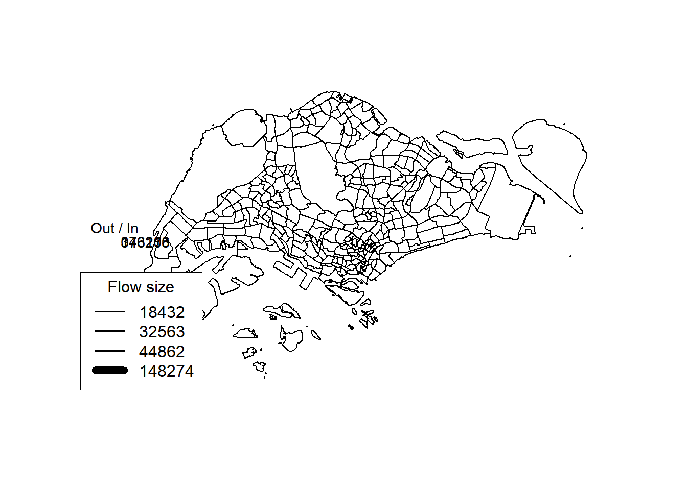
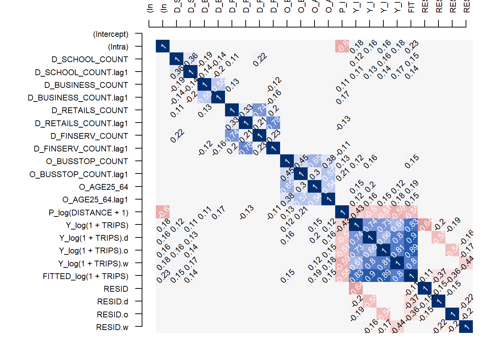
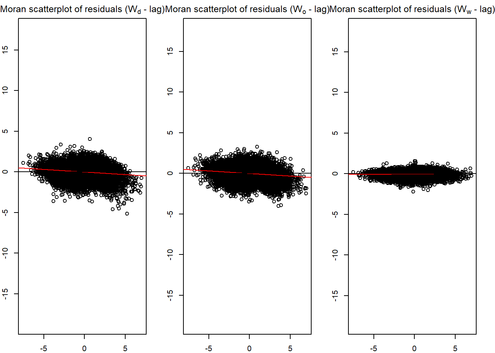

devtools::install_github("LuKeCe/spflow")In-class Exercise 5
Overview
Spatial Interaction Models have often used to explain origin-destination (OD) flows that arise in fields such as public bus commuting. These models rely on a function of the distance between the origin and destination as well as explanatory variables pertaining to characteristics of both origin and destination locations. Spatial interaction models assume that using distance as an explanatory variable will eradicate the spatial dependence among the sample of OD flows between pairs of locations. The notion that use of distance functions in conventional spatial interaction models effectively captures spatial dependence in interregional flows has long been challenged. In view of the limitation Spatial Interaction Models to account for spatial dependence, Spatial Econometric Interaction Models have been introduce James P. LeSage and R. Kelley Pace (2009).
In this in-class exercise, you will gain hands-on exercise on using spflow package, a R library specially developed for calibrating Spatial Econometric Interaction Models. By the end of this in-class exercise, you will acquire the skills to:
extract explanatory variables from secondary source,
assemble and derive explanatory variables from publicly available geospatial data,
integrate these explanatory variable into a tidy variables tibble data.frame.
calibrate Spatial Econometric Interaction Models by using spflow.
Getting Started
In this exercise, the development version (0.1.0.9010) of spflow will be used instead of the released version (0.1.0). The code chunk below will be used to install the development version of spflow package.
Next, we will load spflow and other R packages into R.
pacman::p_load(tmap, sf, spdep, sp, Matrix, spflow, reshape2, knitr, tidyverse)Importing the data
To use the functions in spflow package, we need the following R data types:
Spatial weights
O-D flow data as a tibble dataframe
Explanatory variables as a tibble dataframe
mpsz <- st_read(dsn = "data/geospatial",
layer = "MPSZ-2019") %>%
st_transform(crs = 3414)Reading layer `MPSZ-2019' from data source
`C:\Stella12121\ISSS624\In-class_Ex\In-class_Ex5\data\geospatial'
using driver `ESRI Shapefile'
Simple feature collection with 332 features and 6 fields
Geometry type: MULTIPOLYGON
Dimension: XY
Bounding box: xmin: 103.6057 ymin: 1.158699 xmax: 104.0885 ymax: 1.470775
Geodetic CRS: WGS 84busstop <- st_read(dsn = "data/geospatial",
layer = "BusStop") %>%
st_transform(crs = 3414)Reading layer `BusStop' from data source
`C:\Stella12121\ISSS624\In-class_Ex\In-class_Ex5\data\geospatial'
using driver `ESRI Shapefile'
Simple feature collection with 5159 features and 3 fields
Geometry type: POINT
Dimension: XY
Bounding box: xmin: 3970.122 ymin: 26482.1 xmax: 48280.78 ymax: 52983.82
Projected CRS: SVY21select only subzones with busstops.
mpsz_busstop <- st_intersection(busstop, mpsz) %>%
select(BUS_STOP_N, SUBZONE_C) %>%
st_drop_geometry()Preparing spflow objects
Three spflow objects are required, they are:
spflow_network-class, an S4 class that contains all information on a spatial network which is composed by a set of nodes that are linked by some neighborhood relation.spflow_network_pair-class, an S4 class which holds information on origin-destination (OD) pairs. Each OD pair is composed of two nodes, each belonging to one network. All origin nodes must belong to the same origin network should be contained in onespflow_network-class, and likewise for the destinations.spflow_network_multi-class, an S4 class that gathers information on multiple objects of typesspflow_network-classandspflow_network_pair-class. Its purpose is to ensure that the identification between the nodes that serve as origins or destinations, and the OD-pairs is consistent (similar to relational data bases).
Let us retrieve by using the code chunk below
mpsz_nb <- read_rds("data/rds/mpsz_nb.rds")
mpsz_flow <- read_rds("data/rds/mpsz_flow.rds")
mpsz_var <- read_rds("data/rds/mpsz_var.rds")Creating spflow_network-class objects
spflow_network-class is an S4 class that contains all information on a spatial network which is composed by a set of nodes that are linked by some neighborhood relation. It can be created by using spflow_network() of spflow package.
For our model, we choose the contiguity based neighborhood structure.
mpsz_net <- spflow_network(
id_net = "sg",
node_neighborhood =
nb2mat(mpsz_nb$by_contiguity),
node_data = mpsz_var,
node_key_column = "SZ_CODE")
mpsz_netSpatial network nodes with id: sg
--------------------------------------------------
Number of nodes: 313
Average number of links per node: 6.077
Density of the neighborhood matrix: 1.94% (non-zero connections)
Data on nodes:
SZ_NAME SZ_CODE BUSSTOP_COUNT AGE7_12 AGE13_24 AGE25_64
1 INSTITUTION HILL RVSZ05 2 330 360 2260
2 ROBERTSON QUAY SRSZ01 10 320 350 2200
3 FORT CANNING MUSZ02 6 0 10 30
4 MARINA EAST (MP) MPSZ05 2 0 0 0
5 SENTOSA SISZ01 1 200 260 1440
6 CITY TERMINALS BMSZ17 10 0 0 0
--- --- --- --- --- --- ---
308 NEE SOON YSSZ07 12 90 140 590
309 UPPER THOMSON BSSZ01 47 1590 3660 15980
310 SHANGRI-LA AMSZ05 12 810 1920 9650
311 TOWNSVILLE AMSZ04 9 980 2000 11320
312 MARYMOUNT BSSZ02 25 1610 4060 16860
313 TUAS VIEW EXTENSION TSSZ06 11 0 0 0
SCHOOL_COUNT BUSINESS_COUNT RETAILS_COUNT FINSERV_COUNT ENTERTN_COUNT
1 1 6 26 3 0
2 0 4 207 18 6
3 0 7 17 0 3
4 0 0 0 0 0
5 0 1 84 29 2
6 0 11 14 4 0
--- --- --- --- --- ---
308 0 0 7 0 0
309 3 21 305 30 0
310 3 0 53 9 0
311 1 0 83 11 0
312 3 19 135 8 0
313 0 53 3 1 0
FB_COUNT LR_COUNT COORD_X COORD_Y
1 4 3 103.84 1.29
2 38 11 103.84 1.29
3 4 7 103.85 1.29
4 0 0 103.88 1.29
5 38 20 103.83 1.25
6 15 0 103.85 1.26
--- --- --- --- ---
308 0 0 103.81 1.4
309 5 11 103.83 1.36
310 0 0 103.84 1.37
311 1 1 103.85 1.36
312 3 11 103.84 1.35
313 0 0 103.61 1.26Creating spflow_network-class object
spflow_network-class object is an S4 class which holds information on origin-destination (OD) pairs. Each OD pair is composed of two nodes, each belonging to one network. All origin nodes must belong to the same origin network should be contained in one spflow_network-class object and likewise for the destinations.
In spflow package, spflow_network_pair()
mpsz_net_pairs <- spflow_network_pair(
id_orig_net = "sg",
id_dest_net = "sg",
pair_data = mpsz_flow,
orig_key_column = "ORIGIN_SZ",
dest_key_column = "DESTIN_SZ")
mpsz_net_pairsSpatial network pair with id: sg_sg
--------------------------------------------------
Origin network id: sg (with 313 nodes)
Destination network id: sg (with 313 nodes)
Number of pairs: 97969
Completeness of pairs: 100.00% (97969/97969)
Data on node-pairs:
DESTIN_SZ ORIGIN_SZ DISTANCE TRIPS
1 RVSZ05 RVSZ05 0 67
314 SRSZ01 RVSZ05 305.74 251
627 MUSZ02 RVSZ05 951.83 0
940 MPSZ05 RVSZ05 5254.07 0
1253 SISZ01 RVSZ05 4975 0
1566 BMSZ17 RVSZ05 3176.16 0
--- --- --- --- ---
96404 YSSZ07 TSSZ06 26972.97 0
96717 BSSZ01 TSSZ06 25582.48 0
97030 AMSZ05 TSSZ06 26714.79 0
97343 AMSZ04 TSSZ06 27572.74 0
97656 BSSZ02 TSSZ06 26681.7 0
97969 TSSZ06 TSSZ06 0 270Creating spflow_network_multi-class object
The sp_multi_network-class combines information on the nodes and the node-pairs and also ensures that both data sources are consistent. For example, if some of the origins in the sp_network_pair-class are not identified with the nodes in the sp_network_nodes-class an error will be raised.
mpsz_multi_net <- spflow_network_multi(mpsz_net, mpsz_net_pairs)
mpsz_multi_netCollection of spatial network nodes and pairs
--------------------------------------------------
Contains 1 spatial network nodes
With id : sg
Contains 1 spatial network pairs
With id : sg_sg
Availability of origin-destination pair information:
ID_ORIG_NET ID_DEST_NET ID_NET_PAIR COMPLETENESS C_PAIRS C_ORIG C_DEST
sg sg sg_sg 100.00% 97969/97969 313/313 313/313Given the information on origins, destinations and OD pairs we can use the spflow_map() method for a simple geographic representation of the largest flows.
plot(mpsz$geometry)
spflow_map(
mpsz_multi_net,
flow_var = "TRIPS",
add = TRUE,
legend_position = "bottomleft",
filter_lowest = .999,
remove_intra = TRUE,
cex = 1)
Correlation Analysis
This step aims to avoid including explanatory variables that are highly correlated. The code chunk below will be used to show the correlation matrix.
spflow provides two functions:
pair_cor()to create a correlation matrix, andcor_image()to plot the correlation matrix as a correlogram.
cor_formula <- log(1 + TRIPS) ~
BUSSTOP_COUNT +
AGE7_12 +
AGE13_24 +
AGE25_64 +
SCHOOL_COUNT +
BUSINESS_COUNT +
RETAILS_COUNT +
FINSERV_COUNT +
P_(log(DISTANCE + 1))
cor_mat <- pair_cor(
mpsz_multi_net,
spflow_formula = cor_formula,
add_lags_x = FALSE)
colnames(cor_mat) <- paste0(
substr(
colnames(cor_mat),1,3),"...")
cor_image(cor_mat)
Model Calibration
The core function of the package is spflow(). It provides an interface to three different estimators of spatial econometric interaction models (Dargel 2021) that allow the user to estimate origin-destination flows with spatial autocorrelation.
The three different estimators currently supported by spflow are:
Maximum Likelihood Estimation (MLE) which is the default estimation procedure. The matrix form estimation in the framework of this model was first developed by LeSage and Pace (2008) and then improved by Dargel (2021) . Spatial two-stage least squares (S2SLS)
Spatial Two-stage Least Squares (S2SLS) estimator is an adaptation of the one proposed by Kelejian and Prucha (1998), to the case of origin-destination flows, with up to three neighborhood matrices Dargel (2021). A similar estimation is done by Tamesue and Tsutsumi (2016). The user can activate the S2SLS estimation via the estimation_control argument using the input spflow_control(estimation_method = "s2sls").
Bayesian Markov Chain Monte Carlo (MCMC) estimator is based on the ideas of LeSage and Pace (2009) and incorporates the improvements proposed in Dargel (2021) . The estimation is based on a tuned Metropolis-Hastings sampler for the auto-regressive parameters, and for the remaining parameters it uses Gibbs sampling. The routine uses 5500 iterations of the sampling procedure and considers the first 2500 as burn-in period. The user can activate the S2SLS estimation via the estimation_control argument using the input spflow_control(estimation_method = "mcmc").
Estimation with default settings requires two arguments: an sp_multi_network-class and a flow_formula. The flow_formula specifies the model we want to estimate. The function offers a formula interface adapted to spatial interaction models, which has the following structure: Y ~ O_(X1) + D_(X2) + I_(X3) + P_(X4). This structure reflects the different data sources involved in such a model. On the left hand side there is the independent variable Y which corresponds to the vector of flows. On the right hand side we have all the explanatory variables. The functions O_(…) and D_(…) indicate which variables are used as characteristics of the origins and destinations respectively. Similarly, I_(…) indicates variables that should be used for the intra-regional parameters. Finally, P_(…) declares which variables describe origin-destination pairs, which most frequently will include a measure of distance.
All the declared variables must be available in the provided spflow_network_multi() object, which gathers information on the origins and destinations (inside spflow_network() objects), as well as the information on the origin-destination pairs (inside a spflow_network_pair() object).
Using the short notation Y ~ . is possible and will be interpreted as usual, in the sense that we use all variables that are available for each data source. Also mixed formulas, such as Y ~ . + P_(log(X4) + 1), are possible. When the dot shortcut is combined with explicit declaration, it will only be used for the non declared data sources.
The base model
Let us calibrate a base model with the following configuration:
Explanatory variables use as characteristics of the origins: BUSSTOP_COUNT and AGE25_64.
Explanatory variables use as characteristics of the destinations: SCHOOL_COUNT, BUSINESS_COUNT, RETAILS_COUNT, FINSERV_COUNT.
Explanatory variable describes origin-destination pairs: DISTANCE
The code chunk will be as follow:
base_model <- spflow(
spflow_formula = log(1 + TRIPS) ~
O_(BUSSTOP_COUNT +
AGE25_64) +
D_(SCHOOL_COUNT +
BUSINESS_COUNT +
RETAILS_COUNT +
FINSERV_COUNT) +
P_(log(DISTANCE + 1)),
spflow_networks = mpsz_multi_net)
base_model--------------------------------------------------
Spatial interaction model estimated by: MLE
Spatial correlation structure: SDM (model_9)
Dependent variable: log(1 + TRIPS)
--------------------------------------------------
Coefficients:
est sd t.stat p.val
rho_d 0.680 0.004 192.554 0.000
rho_o 0.678 0.004 187.732 0.000
rho_w -0.396 0.006 -65.591 0.000
(Intercept) 0.410 0.065 6.266 0.000
(Intra) 1.313 0.081 16.263 0.000
D_SCHOOL_COUNT 0.017 0.002 7.885 0.000
D_SCHOOL_COUNT.lag1 0.002 0.004 0.551 0.581
D_BUSINESS_COUNT 0.000 0.000 3.015 0.003
D_BUSINESS_COUNT.lag1 0.000 0.000 -0.249 0.804
D_RETAILS_COUNT 0.000 0.000 -0.306 0.759
D_RETAILS_COUNT.lag1 0.000 0.000 0.152 0.880
D_FINSERV_COUNT 0.002 0.000 6.787 0.000
D_FINSERV_COUNT.lag1 -0.002 0.001 -3.767 0.000
O_BUSSTOP_COUNT 0.002 0.000 6.806 0.000
O_BUSSTOP_COUNT.lag1 -0.001 0.000 -2.364 0.018
O_AGE25_64 0.000 0.000 7.336 0.000
O_AGE25_64.lag1 0.000 0.000 -2.797 0.005
P_log(DISTANCE + 1) -0.050 0.007 -6.793 0.000
--------------------------------------------------
R2_corr: 0.6942944
Observations: 97969
Model coherence: ValidatedResidual diagnostics
In building explanatory models, it is important to check if the model calibrate conform to the statistical assumption of the statistical methods used. The beauty of spflow package is that it provides several functions to support residual diagnostics needs.
In the code chunk below, spflow_moran_plots() is used.
old_par <- par(mfrow = c(1, 3),
mar = c(2,2,2,2))
spflow_moran_plots(base_model)
par(old_par)Next, pair_cor() can be used to inspect the relationship of the residual and the explanatory variables by using the code chunk below.
corr_residual <- pair_cor(base_model)
colnames(corr_residual) <- substr(colnames(corr_residual),1,3)
cor_image(corr_residual)
model.df <- as_tibble(base_model@spflow_indicators) %>%
mutate(FITTED_Y = round(exp(FITTED),0))mpsz_flow1 <- mpsz_flow %>%
left_join(model.df) %>%
select(1:4,8) %>%
mutate(diff = (FITTED_Y-TRIPS))Working with model control
spflow_formula <- log(1 + TRIPS) ~
O_(BUSSTOP_COUNT +
AGE25_64) +
D_(SCHOOL_COUNT +
BUSINESS_COUNT +
RETAILS_COUNT +
FINSERV_COUNT) +
P_(log(DISTANCE + 1))
model_control <- spflow_control(
estimation_method = "mle",
model = "model_8")
mle_model8 <- spflow(
spflow_formula,
spflow_networks = mpsz_multi_net,
estimation_control = model_control)
mle_model8--------------------------------------------------
Spatial interaction model estimated by: MLE
Spatial correlation structure: SDM (model_8)
Dependent variable: log(1 + TRIPS)
--------------------------------------------------
Coefficients:
est sd t.stat p.val
rho_d 0.689 0.003 196.832 0.000
rho_o 0.687 0.004 192.214 0.000
rho_w -0.473 0.003 -142.469 0.000
(Intercept) 1.086 0.049 22.275 0.000
(Intra) 0.840 0.075 11.255 0.000
D_SCHOOL_COUNT 0.019 0.002 8.896 0.000
D_SCHOOL_COUNT.lag1 0.019 0.004 5.130 0.000
D_BUSINESS_COUNT 0.000 0.000 3.328 0.001
D_BUSINESS_COUNT.lag1 0.000 0.000 1.664 0.096
D_RETAILS_COUNT 0.000 0.000 -0.414 0.679
D_RETAILS_COUNT.lag1 0.000 0.000 -0.171 0.864
D_FINSERV_COUNT 0.002 0.000 6.150 0.000
D_FINSERV_COUNT.lag1 -0.003 0.001 -4.601 0.000
O_BUSSTOP_COUNT 0.003 0.000 7.676 0.000
O_BUSSTOP_COUNT.lag1 0.000 0.000 0.552 0.581
O_AGE25_64 0.000 0.000 6.870 0.000
O_AGE25_64.lag1 0.000 0.000 -0.462 0.644
P_log(DISTANCE + 1) -0.125 0.005 -22.865 0.000
--------------------------------------------------
R2_corr: 0.6965974
Observations: 97969
Model coherence: Validatedold_par <- par(mfrow = c(1, 3),
mar = c(2,2,2,2))
spflow_moran_plots(mle_model8)
par(old_par)